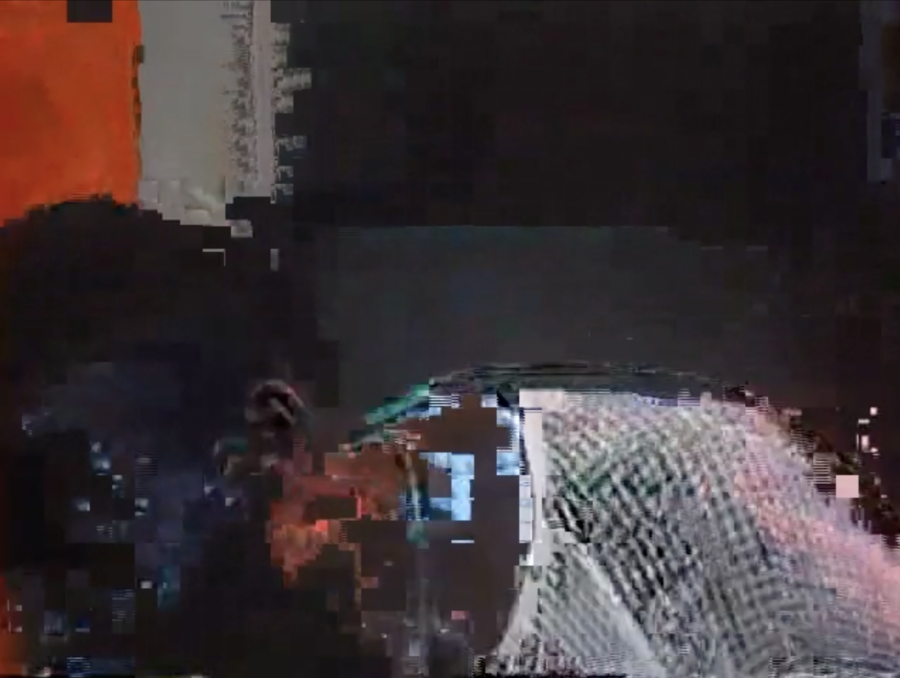

Hunter Whitaker-Morrow and Johan Samboní: Low Resolution: Can’t See You
Low Resolution: Can’t See You is a two-person exhibition that proposes a dialogue between the recent works of Johan Samboní and Hunter Whitaker-Morrow.
Both artists engage with mainstream media, screens, video, and pixels through the filter of their particular cultural and social contexts: Samboní’s life in an under-resourced neighborhood in Cali—the Colombian city with the largest Afro-Colombian population— and Whitaker-Morrow’s upbringing amidst a family close to the cinema industry in Los Angeles.
The works make use of video, videogames, and Hito Steyerl’s concept of “the poor image” to confront the perceived neutrality of audiovisual media, highlighting the relationship between low-resolution formats and racialized contexts, as well as refusing “narrative certainty, visual fixity, and temporal closure.”
Samboní’s pieces in the show draw heavily on the game Grand Theft Auto: San Andreas, which was first released in 2004, but was only available to the artist many years later via bootlegged versions in which pixelated images still glitched upon use. By representing these glitches through painting and staging peaceful walks in the otherwise violent video game, Samboní reflects on his access to technology as an afrodescendant in Colombia, while highlighting the relationships he built with American culture and aesthetics—an influx of which was significant through video games— that were both cemented and distorted by necessity to make sense of them in the context of Cali. His work aims to highlight the term “low resolution” as ambiguous, whereby a piece of low-resolution media can have a relation to a non-resolved issue in the material world.
Whitaker-Morrow’s works approach the instability of the image from a different cultural proximity. Through custom software systems authored in Max/MSP/Jitter and processes such as data-moshing, he produces images that collapse in real time. In Live Signal Mosh Test, a documentary on legendary jazz drummer Elvin Jones is subject to two different types of custom data moshing, causing pixels to shift improperly and react to the decibels of the video. As Jones’ drumming gets louder, the image of his body is destroyed, summoning eerie images of lynching. Whitaker-Morrow’s tech expertise in the destabilization of video image both points to the materiality of the medium, while creating images that, by straining visibility, also strain our capacity to conceive mass-media images as neutral.
Low Resolution: Can’t See You is organized by ACRE Curatorial Fellow Inés Arango-Guingue.
About the Artists:
Hunter Whitaker-Morrow (b. 1995, Los Angeles, CA) is an artist who works in modes of audiovisual performance, installation, and experimental documentary. His work, both structuralist and conceptual, centers on an exploration of the moving image as socio-historical text and the activation of audiovisual constructions to serve as instruments of cultural supersession. Informed by his academic background in sociology and moving-image theory in concert with a depth of experience working in the television industry, Whitaker-Morrow investigates the physical, technological, and sociopolitical dimensions of audiovisual constructions.